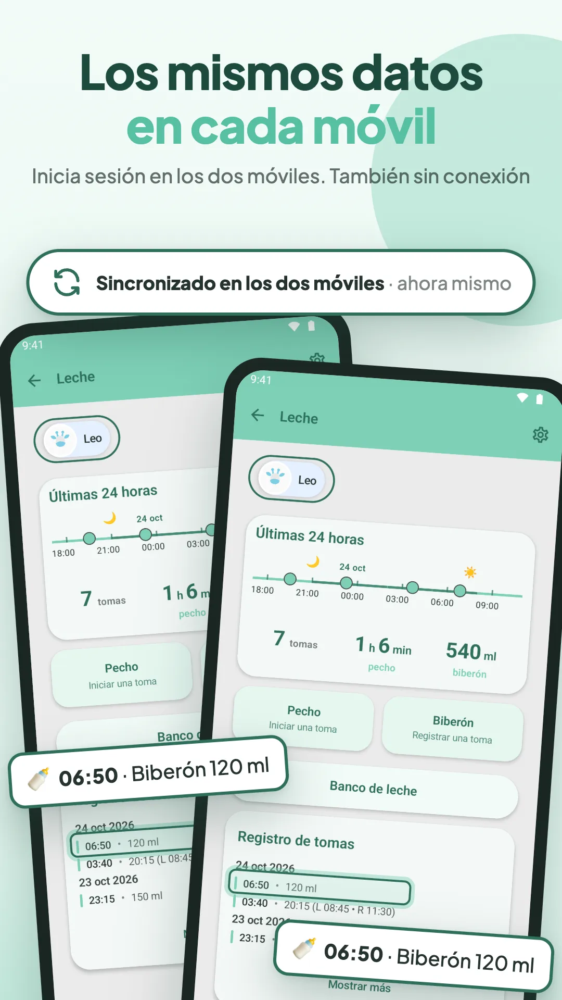

En esta página · 9 secciones
En pocas palabras
Turnarse no es que los dos estéis despiertos a medias toda la noche: es que cada uno tenga un bloque de sueño seguido mientras el otro está de guardia. La forma más sencilla es partir la noche en dos (por ejemplo, de 21:00 a 2:00 y de 2:00 a 7:00, horas orientativas). Si hay lactancia, la pareja puede encargarse de todo menos el pecho, o dar una toma con leche sacada cuando la lactancia ya está asentada. Y apuntar tomas y sueños en un sitio que veáis los dos ahorra el "¿cuándo comió?" en cada relevo.
- Objetivo
- Un bloque seguidopara cada uno, cada noche
- Turno simple
- Noche partida21:00-2:00 / 2:00-7:00
- Con lactancia
- Todo menos el pechoo una toma de leche sacada
- En el relevo
- Un registro comúncuándo comió y cuánto durmió
Por qué turnarse funciona
- Cada uno puede dormir un bloque sin interrupciones. Con un plan, quien no está de guardia duerme sin que lo despierte el bebé, y quien sí lo está sabe que le toca. Un servicio del NHS británico propone turnarse para dormir sin que os molesten.
- El otro progenitor crea su propio vínculo. Dar de comer, bañar, cambiar y dormir al bebé es una forma de conocerlo y de estar cerca de él. Los estudios asocian que el padre o la pareja se implique en los cuidados con un vínculo más fuerte con el bebé.
- Menos carga para quien se está recuperando del parto. Tras el parto el cuerpo necesita tiempo para recuperarse, y sin un plan casi toda la noche suele recaer en la madre.
- Dormir mal y la depresión posparto van de la mano. Las revisiones encuentran que los problemas de sueño y la depresión posparto se asocian, aunque no se sabe del todo qué causa qué. Proteger el sueño de los dos es una forma sencilla de cuidarse.
Cómo repartir la noche con un recién nacido: 3 horarios
No hay un horario correcto. Elegid el que encaje con vuestros trabajos y con cuándo se duerme cada uno, probadlo una semana y ajustadlo. Las horas de los ejemplos son orientativas. Lo importante es que quien no está de guardia pueda dormir de verdad: otra habitación o tapones, y el móvil en silencio.
1. Noche partida (la más habitual)
Cada uno duerme unas 5 horas seguidas. Quien madruga para trabajar coge el primer turno.
2. Una toma cada uno (con biberón o leche sacada)
Útil con un recién nacido que come muchas veces por la noche: cada uno hace las tomas de su tramo.
3. Noches alternas o fines de semana
Suele encajar mejor cuando el bebé despierta menos. En fin de semana, una mañana de dormir hasta tarde para cada uno.
Cómo cambia el reparto según la edad
| Edad | Cómo son las noches | Turno que suele funcionar |
|---|---|---|
| 0-3 meses | Come muchas veces, día y noche. | Noche partida o una toma cada uno. De día, siestas por turnos para recuperar. |
| 3-6 meses | Empiezan tramos de sueño más largos, con altibajos. | Noche partida; quien está de guardia también hace el primer despertar. |
| 6-12 meses | Menos tomas nocturnas; despertares por dientes, regresiones o enfermedad. | Noches alternas, y el otro de refuerzo las noches malas. |
Estas edades son orientativas: cada bebé va a su ritmo y despertarse de noche es normal durante todo el primer año. Si quieres saber cuánto debería dormir tu bebé a cada edad, lo tienes en nuestra rutina de sueño del bebé por edad, y para organizar el resto del día con un recién nacido, en la rutina diaria del recién nacido.
El reparto de día también cuenta
Las noches pesan más, pero el cansancio se acumula con todo lo demás. Repartir tareas fijas evita tener que negociarlo cada día:
| Tarea | Ejemplo de reparto |
|---|---|
| Baño | Siempre la misma persona: se convierte en su rato con el bebé. |
| Rutina de dormir | Por días, para que el bebé se duerma con los dos. |
| Comidas sólidas (desde los 6 meses) | Quien no da el pecho se encarga de la cena. |
| Citas del pediatra y vacunas | Quien pueda ir; el otro mira las notas después. |
| Casa: compra, cenas, lavadoras | Quien tuvo el turno más duro de noche hace menos ese día. |
Si hay lactancia materna
La lactancia no impide turnarse; cambia qué hace cada uno.
- Todo menos el pecho: la pareja se levanta, cambia el pañal, lleva al bebé a la cama para la toma, le saca los gases y lo vuelve a dormir. La madre solo da de comer y sigue durmiendo. El NHS lo resume así: la pareja puede encargarse de los pañales y de vestir al bebé por la mañana para que la madre vuelva a dormir.
- Una toma con leche sacada: cuando la lactancia está bien asentada, la pareja puede dar de vez en cuando una toma de la noche con biberón para que la madre duerma un bloque más largo. Si tenéis dudas sobre cuándo empezar con el biberón, preguntad a la matrona o a una asesora de lactancia.
- Para que no baje la leche: la leche se adapta a lo que pide el bebé, y si el pecho pasa muchas horas sin vaciarse puede notarse muy lleno o incómodo. Por eso muchas madres se sacan un poco de leche cerca de la hora de la toma que hace la pareja, y esa misma leche es la que se da. Sacarse leche también sirve para aliviar un pecho incómodamente lleno.
Si tenéis dudas, una matrona o una asesora de lactancia os ayuda a encajarlo con vuestro bebé.
El relevo sin preguntas
A las 2 de la mañana nadie recuerda cuándo comió. Entrad los dos en Raffy con la misma cuenta de Google (Ajustes → Cuenta y sincronización) y los dos veréis las mismas tomas y los mismos sueños en vuestro móvil. Se sincroniza solo, aunque no al instante: dale unos momentos si acabas de apuntar algo. Es gratis.

Si aún no usáis ninguna app, comparamos las opciones en las mejores apps de seguimiento del bebé para Android.
Seguridad y cuándo pedir ayuda
- Nunca te duermas con el bebé en el sofá o en un sillón. El riesgo de muerte súbita es mucho mayor cuando un bebé duerme con un adulto en un sofá o un sillón. Si notas que se te cierran los ojos dando una toma, deja al bebé en su cuna o despierta a tu pareja.
- Si conduces al día siguiente tras una noche de guardia muy mala, que conduzca el otro o espera a estar más descansado.
- Pide ayuda si alguno de los dos está triste o sin esperanza casi todos los días, no disfruta de nada, no puede dormir ni cuando el bebé duerme, o tiene pensamientos de hacerse daño o de hacer daño al bebé. Y no solo les pasa a las madres: en los estudios, alrededor del 10 % de los padres tuvo depresión durante el embarazo o el primer año del bebé, y es más frecuente hacia los 3-6 meses.
- A quién llamar: tu matrona, médico de familia o pediatra. Si hay pensamientos de hacerse daño, llama al 024 (línea de atención a la conducta suicida, gratuita, confidencial y disponible las 24 horas) o al 112 si es una urgencia.
Este artículo es educativo y no sustituye la valoración de un profesional sanitario.
Preguntas frecuentes
¿Cómo se reparten las noches con un recién nacido?
Lo más sencillo es partir la noche en dos tramos de unas 5 horas (por ejemplo, de 21:00 a 2:00 y de 2:00 a 7:00). Quien está de guardia atiende todos los despertares de su tramo y el otro duerme sin interrupciones.
¿Puede la pareja hacer turnos si hay lactancia materna?
Sí. Puede encargarse de todo menos de la toma (cambiar, gases, volver a dormir) o, cuando la lactancia está asentada, dar una toma con leche sacada. En ese caso conviene que la madre se saque un poco de leche cerca de esa hora para que no le baje la leche.
¿Es mejor turnarse por noches o partir cada noche?
Con un recién nacido suele ir mejor partir cada noche, porque nadie aguanta una noche entera de tomas frecuentes. Cuando el bebé despierta menos, las noches alternas permiten a cada uno dormir una noche completa.
¿Cómo sabemos qué ha pasado en el turno del otro?
Apuntando cada toma y cada sueño en un sitio que veáis los dos, como una app de seguimiento compartida. Así el relevo no depende de lo que recuerde alguien medio dormido.
¿Y si uno de los dos trabaja fuera de casa?
Quien trabaja puede coger el primer tramo de la noche y dormir del tirón la segunda mitad, y compensar con más tareas por la tarde y el fin de semana. Lo importante es que el reparto lo decidáis juntos y lo reviséis cada pocas semanas.
Fuentes
- NHS (Reino Unido)Sleep and tiredness after having a baby (en inglés)
- Ready to Relate · Bradford District Care (NHS)Understanding your baby's sleep (en inglés)
- NHS (Reino Unido)Expressing and storing breast milk (en inglés)
- NHS (Reino Unido)Postnatal depression (en inglés)
- Asociación Española de Pediatría · Comité de Lactancia MaternaRecomendaciones sobre lactancia materna
- American Academy of Pediatrics · HealthyChildren.orgA parent's guide to safe sleep (en inglés)
- Health Service Executive (Irlanda)Recovering after the birth (en inglés)
- Ministerio de Sanidad024. Línea de atención a la conducta suicida
- JAMA (2010)Paulson y Bazemore. Prenatal and postpartum depression in fathers and its association with maternal depression: a meta-analysis (en inglés)
- JOGNN (2015)Bhati y Richards. A systematic review of the relationship between postpartum sleep disturbance and postpartum depression (en inglés)
- Family Practice (2025)Yıldırım y Şahin. Does father involvement affect attachment and maternal depression and quality of life? Ensayo aleatorizado (en inglés)
- Irish Journal of Medical Science (2026)Akça y Tuncay. Fathers' involvement in infant care and infant attachment levels (en inglés)
Revisamos este artículo con estas fuentes el 17 nov 2026. Es contenido educativo, no consejo médico. Política editorial